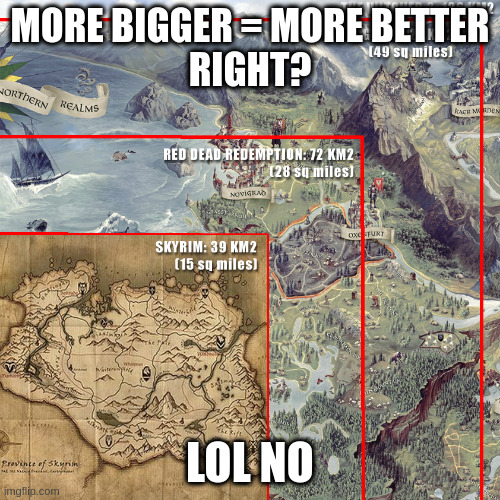
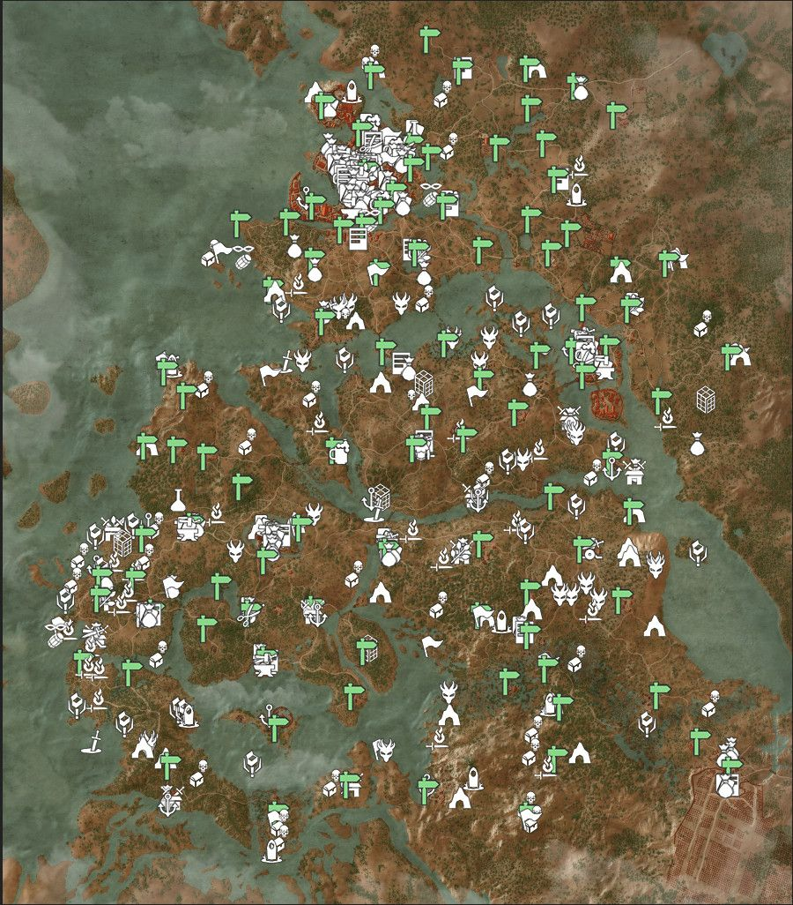
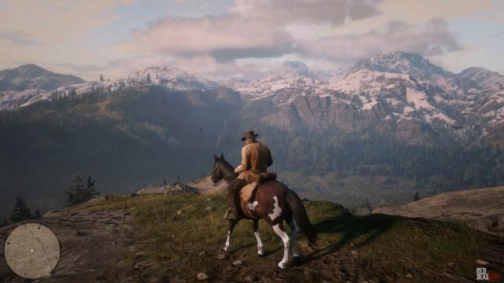
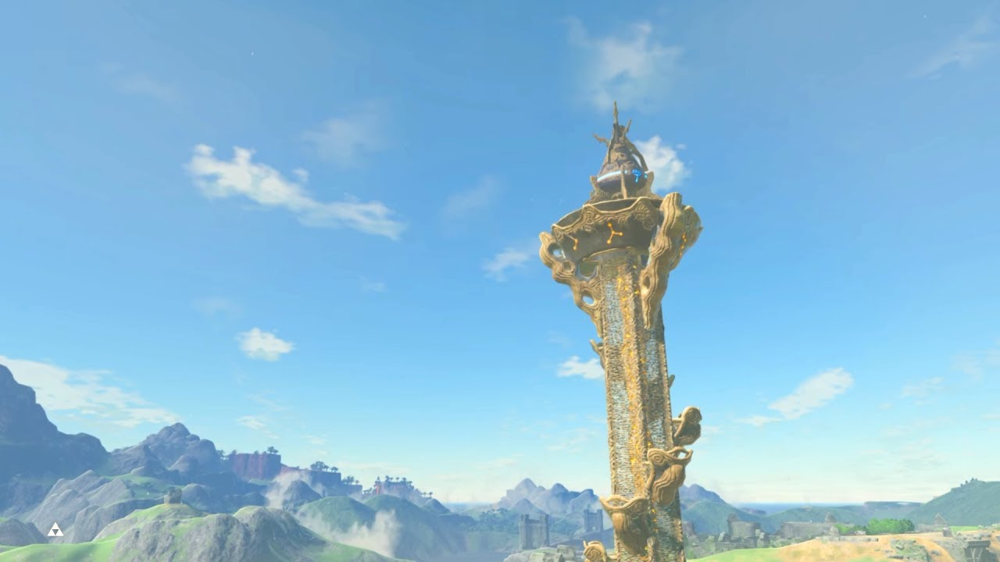
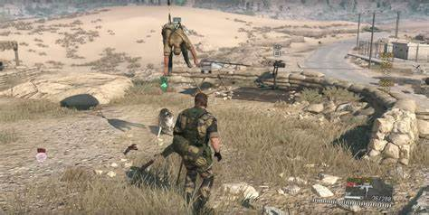

“Open world” really has become just a buzzword for AAA game studios, just an extra you slap onto a videogame to make it more “marketable” and clickbaity to a mass of uninformed consumers. How did we let this happen? How did we let the videogame industry at large (save for a few notable exceptions) suck the excitement and the mystique out of incredibly large worlds with the potential to lend themselves to freedom in player expression?
Ever since the resounding success of the modern era of the Fallout series and Skyrim (flawed games by the standards of this article, that I enjoy nonetheless), the open world landscape started changing, with other big players in the industry taking notes and pumping massive amounts of cash into giant worlds that would be tacked onto games that don’t even need them, let alone use them in interesting ways.
Player expression and the compulsive following of trends within gamers and publishers are most likely the key to this conundrum, and it all dates back to the origins of the open world subgenre. In this article I explore what I deem to be failing approaches to the open world genre, as well as some of the solutions that made me actually want explore these worlds more than is needed from the main content.
Why are we stuck in the past?
When looking for the origins of the modern open world, look no further than Grand Theft Auto 3: the game that marked the plunge of Rockstar and mainstream videogames into the wild frontier of 3D open world exploration. Sure, the story was linear, and it wouldn’t make use of the entire map, but letting the player explore a virtual city in between main story missions was a big part of what made the GTA franchise what it is today, and the beginning of a trend in game development that wouldn’t leave us any time soon.
The problem with trends, though, is that everybody wants to jump in no matter what, even if the technique is still to be developed to a reasonable extent. I can get behind the excitement for a lot of franchises finally transitioning to 3D, with more realistic environments and large map sizes, but the novelty was bound to wear out, at least from a gameplay perspective.

In fact, it’s about damn time for the novelty to wear out for game developers and publishers too. In the last decade, the vast majority of videogames featuring an open world has barely taken any steps forward, stuck in a seemingly endless slump. I’m not saying I didn’t enjoy playing Skyrim (even though i was a kid when I completed it), it’s just that if I wanted to play that game again i’d just boot it up and maybe put some mods on, instead of buying a game that wants to be Skyrim.
World maps keep getting bigger and more detailed with every release, so big, in fact, that most people nowadays don’t even care about size comparisons between games. As technical limitations disappear, map size comparisons have become just as meaningless as other more juvenile comparisons, because bragging about your game’s giant open world map and graphics says almost nothing about the more important aspects of gameplay and story.

If bigger is better, why do I get bored after 20 hours of roaming the beautiful map of Horizon: Zero Dawn? Because these giant maps keep getting in the way of the gameplay and the story’s pacing, without being interesting to traverse. Along the way, you may stumble into fights with machines, gather resources for your weapons and witness magnificent landscapes, but that’s almost all there is to it: fight, loot corpses, move from point A to point B without dying to play a side mission or continue the story. You can fill your world with whatever you want, but the latter activity needs to deeply entice players, else they won’t be as motivated to explore your world, and it will be bound to lose its meaning.
To be fair to Guerrilla Games, their worlds above the average, especially from an audiovisual standpoint, but the fact that these issues are brought up in so many games nowadays just means that the bar for a good open world is not that high, especially when developers start adding autopilot to mounts, or annoying indicators all over the map, making resources, treasures, and optional fights immediately explicit to the player, instead of using the world itself to reveal them.

The cracks in outdated design have started to show, even in entries from renowned franchises, like we have run out of ideas. All this side content we cram into these games gets spread out (and at times even copy-pasted, you know who i’m talking about) over a giant map that does nothing but unnecessarily pad the game’s length. I, for one, don’t want the open world subgenre to keep going like this: it doesn’t have to be enormous, technically ground-breaking, to automatically regenerate content, or even be open world at all, as game makers, we should keep our focus on making it fun.
Why is movement not a meaningful mechanic?
Movement and exploration - or node traversal, as legendary game designer Raph Koster would put it - has been one of the most fleshed out mechanics in videogames: some genres, like platformers and first person shooters wouldn’t be where they are today if they didn’t keep innovating on one of the oldest mechanics in modern gaming.
The way open world mechanics are marketed today, you would rightfully expect the player to be granted an higher degree of freedom in approaching exploration. And yeah, in modern open worlds you usually can “go” wherever you like inside the world’s outer boundaries, but when you unlock fast travel to a location, just how many times is the player willing and happy to walk there by just pushing their analog stick forward?

Just walking or having your mount autopilot to your next location is not engaging, we need to give the player more options to tackle movement, and have them be influenced by map design, so that they gradually come up with their own way of exploring the world. In games where fast travel is restricted or has costs, this issue is exacerbated with things like pre-baked enemy encounters that force you to stop on your tracks to either kill them, sneak away, or zoom past if you have magic mounts or vehicles.
This either kills the game’s pacing or discourages active exploration, wether you’re in it for the main or side quests: if for whatever reason you want to kill filler enemies, you are granted resources and the liberty to more carefully explore that area until they respawn, and if you skip it because you can’t wait to advance the story, you give up on thoroughly exploring the area.
Some obligatory mentions here are Super Mario 64’s movement system (that keeps speedrunners playing to this day!), the Just Cause franchise with its wonky physics, and of course, The Legend Of Zelda: Breath Of The Wild (BOTW from now on) and Death Stranding.

These last two games tackle this problem in very different ways to achieve a very different objective. Every aspect of the UI design and Link’s moveset, with particular emphasis on the “climb everything” mechanic, is instrumental to allow creative but deliberate approaches to exploration as a means of enriching the core experience (note that climbing is NOT the core experience, only part of it).
On the other hand, in Death Stranding, movement IS the core experience: you have to deliver packages with different properties from point A to point B, and the world is used to challenge the player with all kinds of obstacles made to impair your ability to traverse the world safely.
To some players, this can sound like an annoying task, but what’s important is that actually executing said task is not as bland as an outsider (we are used to way cooler marketing hooks) might think. Each and every aspect of Sam’s movement is fleshed out to an impressive degree, and when the game’s mechanics open up, it lets the player tailor the movement system to their own style.
Why are you not making your world systemic?
A systemic game world is made up of systems that are designed to interact with each other, creating feedback loops that are not entirely dependent on the player’s actions. After all, video games are a kind of simulation: most developers simply choose to avoid exploring their designs in that direction. Not that it’s a bad thing. Simple and focused designs still have the potential to result in excellent games, and systemic designs are much more complicated, technically speaking, and thus out of reach for many projects.

But in open world games, often developed by giant companies, and marketed with player freedom in mind, avoiding systemic designs is a huge missed opportunity at making a world that feels more alive and responsive to the player’s actions. You could have weather systems, physics, combat, as player and NPC allegiances and morality systems interact with each other, creating the opportunity for emergent gameplay.
AI that consistently reacts to this design philosophy is a prime candidate for mechanics that allow the player to get creative with their planning: newcomers can enjoy the discovery of how each system interacts with the others, and experienced players get the increased freedom of approach, which drives up replayability.
A notable example of these concepts in action is the way enemies of different kinds and factions can actually fight each other, as seen in the Fallout and Far Cry franchises. Sometimes developers deliberately point the player in this direction by designing encounters that allow these situations to happen.
Why are you filling your game map with markers?
When marketing an open world game, relying on the sense of wonder and discovery really enhances the experience and the act of exploring the world. So why are we not exploiting this in the actual game, but instead filling the map with markers that point to each and every single encounter and piece of loot?
This gets boring, really fast. Especially when a lot of this content gets copy pasted over and over, and the payoff is not even linked to the act of specifically choosing to explore these places: you just move about in the game world, ticking off a giant checklist of mundane tasks, farming experience points and loot you will almost instantly recycle.

The Witcher 3 and Cyberpunk 2077 are especially guilty of this, and while you could argue completing every single event on the map is not the point of the game, this doesn’t add much towards making the world actually fun to explore. Over multiple playthroughs, the player just ends up spending the vast majority of their time in the few locations that actually matter to the game’s story.
The problem here is, as the player opens the map to get an initial feel for the world, they just get overwhelmed by the amount of content, and it just feels like the world has already been explored and is now being spoonfed to the player. Exploring a world that is actually built for the player to existin in, andd discovering its contents in an organic way is more engaging, it has the player actually think about their surroundings instead of mindlessly following a GPS-like trail of dots that leads 99% of all players through the same experience.
Compulsive fast travel is when the magic ends
Even when following all of these advices, the open world formula is still not a silver bullet. Not all games need or should have an open world, and the main reason for this is the fact that open worlds are big and way more dispersive than more traditional designs. From a gameplay standpoint, they don’t always work, to the point that players will sometimes wonder why an open world is even in the game.
Even when open worlds are well implemented, travelling from one location to another tipically takes much more time, and content that would have been presented in a particular order ends up being scattered all over this giant map (Elden Ring is a prime example of this issue).
And realistically, we can’t really expect game studios to just implement all of the aforementioned stuff, because of design or budget constraints. Developing an open world game is a constant balancing act between keeping it sustainable, consistent with the other gameplay systems and regulating the amount of handcrafted versus procedural content.
Bigger worlds also mean more content, more side quests, more places to explore, and overall more play time, so it’s no wonder that the genre has started to feel exhausting, which is in part due to its ubiquity in the AAA space. And when the player gets exhausted, they will most likely try to cut the time they dedicate to repetitive, or less story-relevant tasks such as exploration. In the later part of their playthrough they will just start using the fast travel feature to teleport all over the world, instead of engaging with it at large.
This is, to me, the death of an open world: when in the span of a playthrough the player realizes the world was never really that important, and it most of its value returns to being a beautiful set piece that the player has to go through to get to the next story segment.
While this is inevitable, designers need to find ways to keep players engaged with the world itself, in a way that builds upon the core gameplay, lest the player have a very short honeymoon phase with these such big, detailed, and most importantly, expensive worlds.